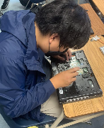

9/2/22: I created a project in Tinkercad. We learned how CAD can
be used in order to create designs for Mechanical Engineering, along with some
safety. We made a practice cad from a home appliance for a competition
that I won. 9/9/22: We started to cad our rupe goldberg machine which allowed us to have a reference for our official machine
Our cad project was a little ruff with the sizes, but has a possibility to work with the set dimensions
9/16/22: We did a boat contest, that consisted of making paper boats on top of water.
Our boat lasted the 5 minute timer, at around 60 mg of weight. Our boat was shaped like a box, and was able to
hold more weight, but we chose to lessen the weight to ensure stability.
9/23/22: We created our Rube Goldberg machine, which popped a baloon. We used cardboard, tape, and a baseball in order
to create our machine. We differed from our CAD as we were too ambitious with our CAD, and we needed to level out with our work ethics.
Our machine worked almost immendiately, but our baloon fell and popped on its own before we were able to hit it.
9/30/22: We dissected a laptop that was once used by CVHS. We were not able to take out the hardrive on the first computer, and needed to work with another one. When we started
to get towards the end of the project, we were met by some struggles that sourced from the main plate, which did not want to come out.

10/7/22: We made a cad of a prosthetic part for an animal. I created one for a horse leg up to the calf.